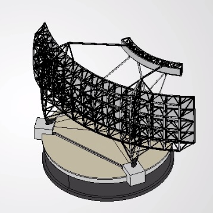
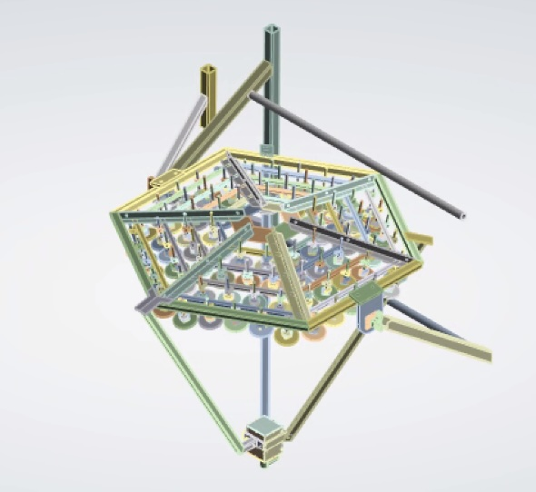

01 / Trinity Neutrino Observatory
The engineering problem
Trinity is a neutrino observatory concept using optical telescopes to detect faint signals associated with high-energy particle interactions. A telescope's frame must do more than avoid structural failure: changes in mirror position and orientation can alter the light distribution at the camera.
As mechanical design lead in Georgia Tech's VIP, I work on the mechanical interfaces and the relationship between structural behavior and optical performance. My goal is to make the structural model useful for decisions about stiffness, supports, alignment and assembly.

02 / Trinity Neutrino Observatory
Modular mechanical architecture
I developed SolidWorks assemblies for telescope frames, trusses, mirror supports and camera mounts. The CAD model separates major structures from the optical and electronics interfaces so they can be evaluated and revised without rebuilding the entire assembly.
Structure
Upper and lower frames, space trusses and support geometry establish the primary load paths and provide attachment points.
Optical interfaces
Mirror supports and camera mounting geometry connect mechanical tolerances to alignment requirements.
Integration
Electronics packaging, joint fit, fastener access and assembly sequence constrain the available design space.
Prototyping
Scaled 3D-printed components allowed physical inspection of joint fit, assembly tolerances and detector interfaces.
03 / Trinity Neutrino Observatory
Python structural solver
I built a three-dimensional structural simulation from CAD-derived member geometry. The modeling approach represents the frame as connected members with stiffness matrices; assembling their contributions into a global system allows structural response to be evaluated under specified loads and constraints.
Structural-to-optical workflow
- 01CAD geometryNode coordinates, connections, properties
- 02Structural solutionAssemble stiffness and apply loads / constraints
- 03DeformationExtract frame displacement and mirror rotation
- 04Optical responseEvaluate changes in alignment and spot distribution
The simplified numerical model is valuable for rapidly comparing load cases and evaluating how changes in mechanical inputs influence optical behavior. Boundary conditions, member idealization and orientation conventions are critical: an apparently plausible displacement is not evidence that the model is correct.
04 / Trinity Neutrino Observatory
Monte Carlo and optical sensitivity
Rather than relying only on one nominal configuration, I used Monte Carlo sampling of input distributions to examine variability in predicted frame deflection, mirror rotation and optical misalignment. The process connects a distribution of mechanical inputs to a distribution of optical outcomes.
Recent modeling work included examining ray/spot-cloud symmetry at positive and negative field angles and testing a curved field-following benchmark. These checks help distinguish optical-model artifacts from meaningful structural effects. A rigid optical reference and a deformed configuration need consistent coordinates, ray selection and field-angle conventions before their spot sizes can be compared.
The modeling workflow is implemented, and benchmark debugging has been performed. Structural-to-optical coordinate errors and final optical acceptance limits are still being investigated; preliminary spot-size values should not be interpreted as validated telescope performance.
05 / Trinity Neutrino Observatory
ANSYS FEA and model cross-checks
I compared Python structural predictions against ANSYS simulations to examine gravity-induced deformation, thermal expansion and environmental wind/vibration loads. I also evaluated joint stress concentrations and support deformation, with an emphasis on where stiffness and alignment might be most sensitive to a design change.

| Load case | Response of interest | Design implication |
|---|---|---|
| Gravity | Frame sag, relative mirror displacement | Support layout and pointing-dependent alignment |
| Thermal expansion | Relative movement and constrained stress | Interface compliance and material compatibility |
| Wind / vibration | Deflection and dynamic sensitivity | Frame stiffness and environmental response |
| Joint loads | Localized stress and support deformation | Connection geometry and load transfer |
Comparisons require equivalent geometry, materials, restraints and applied loads. The Python model provides a fast system-level view; FEA can investigate local effects that simplified members cannot resolve. I use the two approaches together rather than treating either as an automatic ground truth.
06 / Trinity Neutrino Observatory
Field operations and optical protection
I monitored live detector telemetry during demonstrator observation shifts and assisted with troubleshooting. Working with the actual instrument exposed operational constraints beyond the CAD environment, including equipment state, observation conditions and the need to protect optical hardware when the system is not operating normally.
I investigated fire-resistant mechanical shutters, PDLC light-control films and fail-safe protection concepts for power-loss scenarios. A key distinction is between optical attenuation and a physical protective barrier: a switchable film may reduce transmission but is not by itself a verified substitute for a mechanically safe shutter.
Protection work considered safe parking, potential solar exposure and how the system should behave when power is lost. These are concept investigations, not a claim that a qualified protection system has been deployed.
07 / Trinity Neutrino Observatory
Current status and engineering takeaway
The work combines modular CAD, physical prototypes, numerical structural analysis, FEA and direct observation experience. The next validation priorities are consistent structural/optical coordinate conventions, documented load and boundary-condition assumptions, and quantitative comparisons against established alignment requirements.
My main takeaway is that the best structural design for a precision instrument is not necessarily the one with the smallest peak stress: relative motion at the optical interfaces, repeatability and operational safety also matter.
Related work
The Off-Road suspension project applies the same load-path and structural verification mindset to high-impact mechanical joints.
View all projects